July 19, 2015
| This is our second attempt at this (not very
challenging) hike. The first time, Eric was concerned about my knees
and wouldn't let us go very far. The second time we made it nearly
to the top before the signs of nearby bear were too noticeable to
ignore. We didn't have bear spray or a gun, so we decided that we
didn't want to face a bear armed only with our sparkling personalities.
Maybe by the end of summer we'll finally complete this one easy
hike! |
|
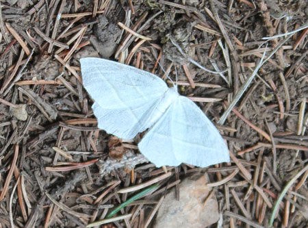 There were lots of butterflies up there |
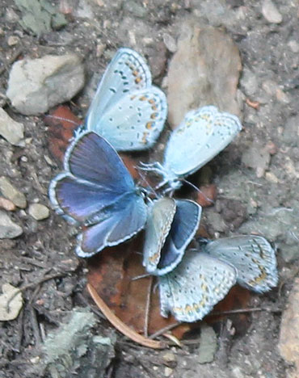 |
| These were on one particular rock, it must have been salty or something | |
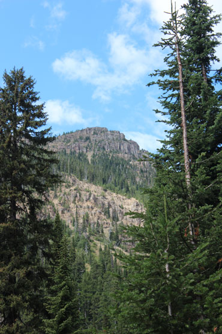 |
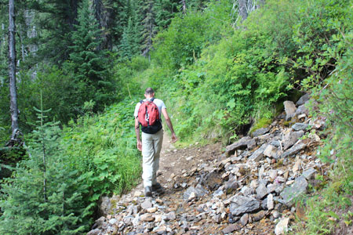 |
| On our way | This water trickling down the hill was very pretty in person, not so much in a picture |
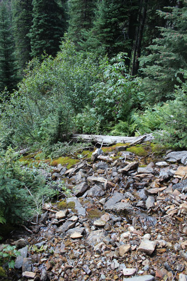 |
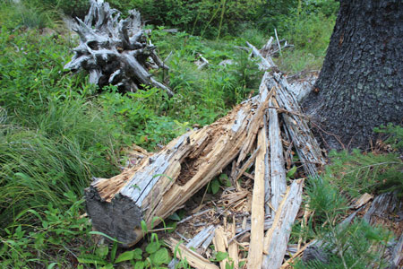 |
| Again, you had to be there | A log that appeared to be very freshly shredded by a bear. We say
fresh judging by the wood and the swarm of ants we saw running around. |
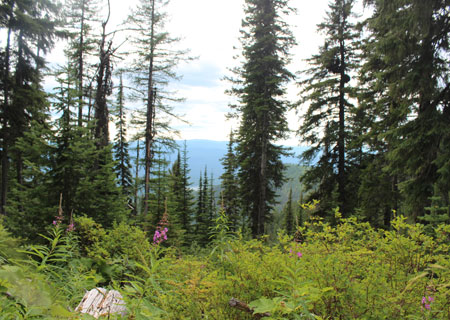 |
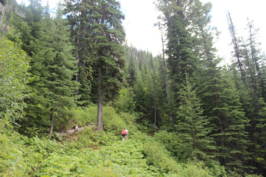 |
| Glen Lake is far below us here | Eric is far above me here, hoping to find the bears first |
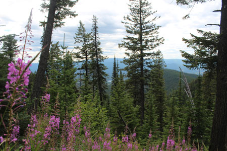 Scenery |
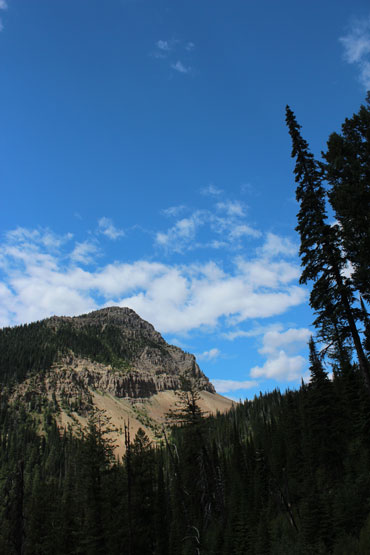 |
| One side of the pass | |
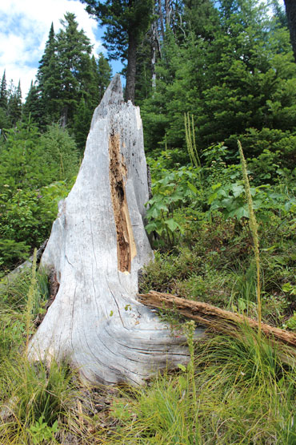 |
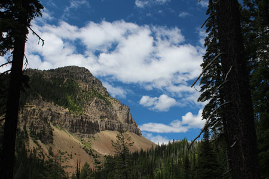 The pass again, landscape mode this time |
| More stumps torn by bear, this may not have been fresh | |
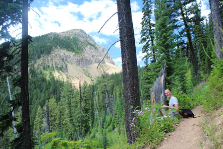 |
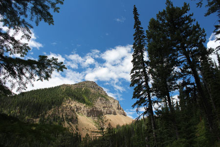 |
| My man, stopping for a water break | Continuing my series of shots from nearly the same spot... |
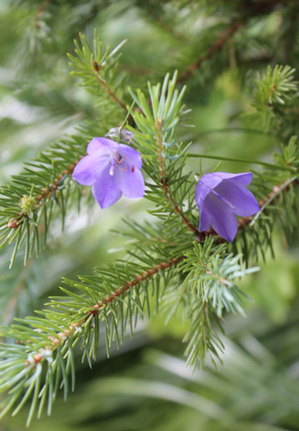 |
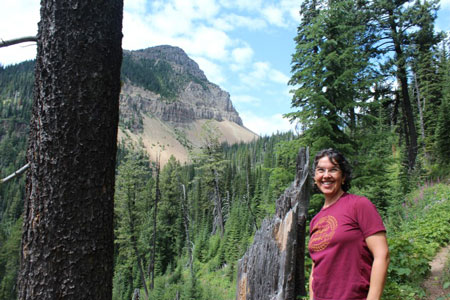 Smiling, sweaty Shawnna |
| So pretty! | |
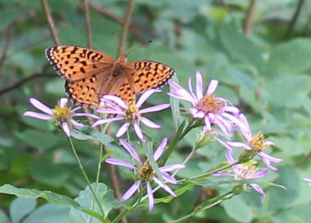 |
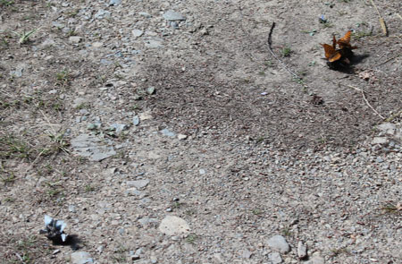 |
| More butterfiles | Two clusters of butterflies, they were totally digging some turds on the trail! |
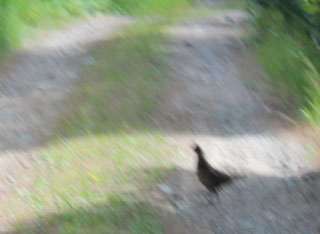 |
|
| Blurry shot of a grouse we saw on the way out. My windshield is way too dirty for pictures, so I was waving the camera out the window. |
|